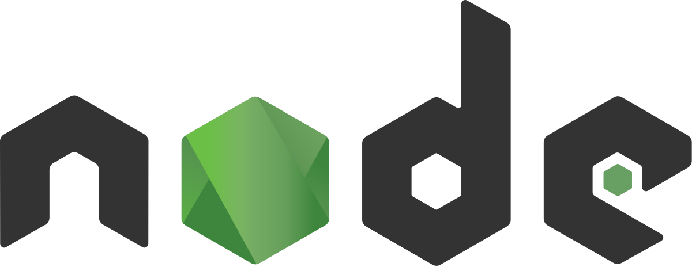

NodeJS / Обзор
Немного истории
NodeJS произвёл настоящую революцию в подходе к построению сайтов. Почему он стал таким популярным, на что способен Node и какие его основные функции. Об этом в этой статье.
NodeJS был придуман Райаном Далем в 2009. Еще до создания NodeJS, Даль занимался разработкой на Ruby on Rails. Основную идею для NodeJS он позаимствовал с Flickr (сайт для загрузки и обмена изображениями). На сайте была шкала состояния, которая показывала статус загрузки изображения. Сейчас это кажется чем-то самим собой разумеющимся, но тогда, в начале нулевых, подобное «общение» со стороны сервера было чем-то новым и необычным. Именно это и «зацепило» Даля, ведь раньше серверы не имели возможностей для одновременной обработки нескольких запросов (например, при загрузке изображения и параллельных запросах со стороны того же пользователя). Это явление называется параллелизмом.
NodeJS не являлся стандартным веб-сервером ни раньше, ни сейчас. При распаковке NodeJS он не запускается сразу как веб-сервер. Для этих целей разработчикам потребуются фреймворки или прописывание логики в NodeJS.
Основные преимущества
- Скорость
- Простота
- JavaScript
- Движок V8
- Асинхронность
- Библиотеки
Введение в Node.js
Установка
Node.js можно устанавливать различными способами, которые мы сейчас рассмотрим.
Так, официальные установочные пакеты для всех основных платформ можно найти здесь.
Существует ещё один весьма удобный способ установки Node.js, который заключается в использовании менеджера пакетов, имеющегося в операционной системе. Например, менеджер пакетов macOS, который является фактическим стандартом в этой области, называется Homebrew. Если он в вашей системе есть, вы можете установить Node.js, выполнив эту команду в командной строке:
brew install node
Список менеджеров пакетов для других операционных систем, в том числе — для Linux и Windows, можно найти здесь.
Первое Node.js-приложение
Самым распространённым примером первого приложения для Node.js можно назвать простой веб-сервер. Вот его код:
const http = require('http');
const hostname = '127.0.0.1';
const port = 3000;
const server = http.createServer((req, res) => {
res.statusCode = 200
res.setHeader('Content-Type', 'text/plain')
res.end('Hello World\n')
});
server.listen(port, hostname, () => {
console.log(`Server running at http://${hostname}:${port}/`)
});
Фреймворки и вспомогательные инструменты для Node.js
Node.js — это низкоуровневая платформа. Для того чтобы упростить разработку для неё и облегчить жизнь программистам, было создано огромное количество библиотек. Некоторые из них со временем стали весьма популярными. Вот небольшой список библиотек, которые я считаю отлично сделанными и достойными изучения:
- Express. Эта библиотека предоставляет разработчику предельно простой, но мощный инструмент для создания веб-серверов. Ключом к успеху Express стал минималистический подход и ориентация на базовые серверные механизмы без попытки навязать некое видение «единственно правильной» серверной архитектуры.
- Meteor. Это — мощный фулстек-фреймворк, реализующий изоморфный подход к разработке приложений на JavaScript и к использованию кода и на клиенте, и на сервере. Когда-то Meteor представлял собой самостоятельный инструмент, включающий в себя всё, что только может понадобиться разработчику. Теперь он, кроме того, интегрирован с фронтенд-библиотеками, такими, как React, Vue и Angular. Meteor, помимо разработки обычных веб-приложений, можно использовать и в мобильной разработке.
- Koa. Этот веб-фреймворк создан той же командой, которая занимается работой над Express. При его разработке, в основу которой легли годы опыта работы над Express, внимание уделялось простоте решения и его компактности. Этот проект появился как решение задачи внесения в Express серьёзных изменений, несовместимых с другими механизмами фреймворка, которые могли бы расколоть сообщество.
- Next.js. Этот фреймворк предназначен для организации серверного рендеринга React-приложений.
- Micro. Это — весьма компактная библиотека для создания асинхронных HTTP-микросервисов.
- Socket.io. Это библиотека для разработки сетевых приложений реального времени.
Примеры работ
Эти сайты сделаны на Node.js